Practical WPO intro
wimleers.com — Wim Leers — @wimleers
TL;DR
Fast internet connection ⇏ fast browsing
WTF is WPO anyway?
WPO = Web Performance Optimization
Coined in 2010
[…] convergence of awareness, even urgency, on the business side and growing expertise in the tech community around web performance marks the beginning of a new industry that I’m calling “WPO” – Web Performance Optimization. […] WPO also improves the user experience, increases revenue, and reduces operating costs.
Optimize how?
Full stack!
- Operating systems — e.g.
initcwnd - Network infrastructure — e.g. LTE vs. 3G
- TCP/IP — e.g. TCP's slow start
- HTTP — e.g. no multiplexing support
- Browsers — e.g.
<script async>
Optimize once?
Internet: evolving organism, accelerated by end-to-end principle
- Bigger pipes
- Better browsers
- Different devices
- Different applications
Why invest in WPO?
- Because geeks love the beauty of a perfect system :)
- Speed ⇒ more & happier visitors ⇒ more revenue
- Google: +0.5s ⇒ -20% searches
WPO theory
Don't worry, it'll be short.
Typical page load duration
- CSS, JS, images, fonts …
- HTML
The first WPO book
The 14 Rules
- Make fewer HTTP requests
- Use a CDN
- Add
Expires/Cache-Controlheaders - Gzip textual files
- Put CSS at the top
- Put JS at the bottom
- Avoid CSS expressions
- Make JS and CSS external
- Reduce DNS lookups
- Minify JS
- Avoid redirects
- Remove duplicate JS
- Configure ETags
- Make AJAX cacheable
Example: make fewer HTTP requests
- Aggregate CSS & JS:
foo.css+bar.css=a54d9f.css - Inlining:
data:URIs - CSS sprites (combine background images):

Example: leverage new standards
border-radius, no images … but IE8? (caniuse.com/border-radius)- SVG for icons … but IE8 & Android 2.3? (caniuse.com/svg)
- WOFF for fonts … but IE8 & Android? (caniuse.com/woff)
… and so much more!
- Domain sharding
- Non-blocking JS loaders
- Optimize images
- Simplify CSS selectors
- Split payload: minimal for first paint
- Leverage
localStorage& application cache - Override TCP
initcwndconfiguration - …
My story
- Christmas vacation 2007
- I got really annoyed by slow sites.
- Student ⇒ plenty of time ⇒ article: “Improving Drupal's page loading performance”
- 2008: bachelor thesis: make Drupal faster.
- Measure: Drupal Episodes module
- Sync: File Conveyor: optimize files, sync to CDNs
- Integrate: Drupal CDN module
- 2010: master thesis: WPO analytics
… turned out to be great timing …
Lucky timeline
- Jul 2009: bachelor thesis defended (>2.7 million measurements)
- Oct–Dec 2009: data mining course
- Dec 2009: master thesis proposal: mining episodes data
- Dec 2009: page speed will be a Google ranking factor
- Nov 2010: master thesis literature study finished
- Dec 2010: wrote “WPO Analytics” for Perf Calendar
- Feb 2011: contacted by Facebook to work there — WTF?
- Apr 2011: accepted for Facebook internship!
- Jul 2011: master thesis defended
- Aug 2011: File Conveyor evaluated by whitehouse.gov
- Sep–Dec 2011: internship: wimleers.com/tags/facebook
- Jan 2012: declined Facebook job offer
- May 2012: remote in Office of the CTO at Acquia, full-time Drupal core
So, studying…
… plus open source contributions …
… plus frustration passion …
… and hard work …
… got me a fancy internship…
… all helped me get my dream job.
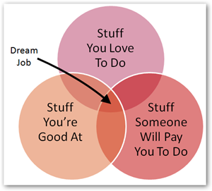Profiling
If you can not measure it, you can not improve it.
Bachelor thesis
Make Drupal faster by integrating it with a CDN
⇓
How to measure?
Definition of "faster"?
Performance monitoring
- Synthetic: simulated users, controlled environment
- Real: actual users ("RUM": Real User Monitoring)
Development vs. production
Navigation Timing
- Deep stack visibility
- Draft W3C spec
- Limited browser support (none of Apple's) caniuse.com/nav-timing
- Fallback: Episodes (used in bachelor thesis) and Boomerang
Navigation Timing Example
Try it!
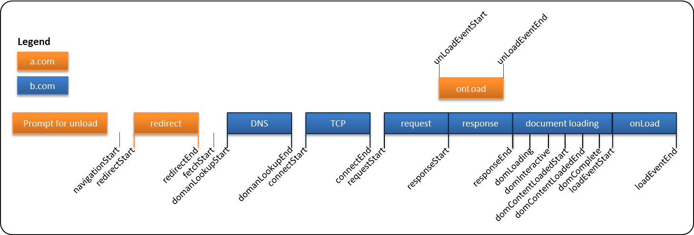var t = performance.timing;
var htmlRenderTime = t.responseStart - t.requestStart;
var htmlDownloadTime = t.responseEnd - t.responseStart;
var usesRedirect = (t.redirectEnd - t.redirectStart) > 0;
var timeToFirstByte = t.responseStart - t.navigationStart;
var timeToFirstPaint = t.domInteractive - t.navigationStart;UX basics
- Stay under 0.25 s to feel "fast".
- Stay under 1s to keep attention.
| Delay (s) | User reaction |
|---|---|
| 0–0.1 | Instant |
| 0.1–0.3 | Feels sluggish |
| 0.3–1 | Machine is working… |
| >1 | Mental context switch |
| >10 | I'll come back later … maybe |
Time to first paint
Most important overall measure, not the only one!
AKA:
- Time to start render
- Time to glass
- …
Bachelor thesis
Make Drupal faster by integrating it with a CDN
⇓
How to measure?
- Collect Navigation Timing data
- For real users (RUM)
- Aggregate
Definition of "faster"?
<1s, but depends on: page complexity, location, device …
Statistics
- Average & median too skewed.
- Understand the distribution shape.
- When setting goals: 75th percentile, 90th, 99th
Continous & smarter profiling
Collecting the data is only 10% of the work.
Understanding it is much more difficult!
↓
data mining
Master thesis: WPO Analytics
Automatically pinpoint causes of slow pages via data mining.
- "
example.com/fancy-page'sCSSepisode is slow" - "
example.com'sJSepisode is slow for IE 8 & 9 users." - "
example.com/some-pageis slow in Belgium" - "
example.com/gallery'sloadCarouselepisode is slow in Belgium for Firefox 3 users"
How are we doing?
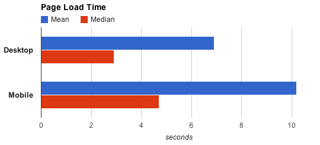 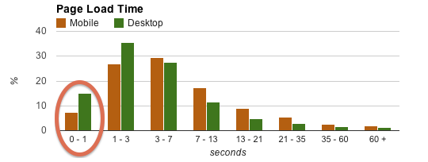As tracked by Google Analytics — April 2012
Desktop
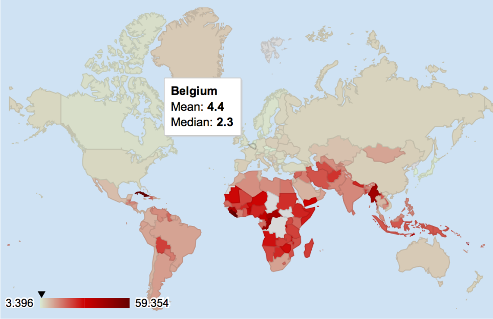As tracked by Google Analytics — April 2012
Mobile
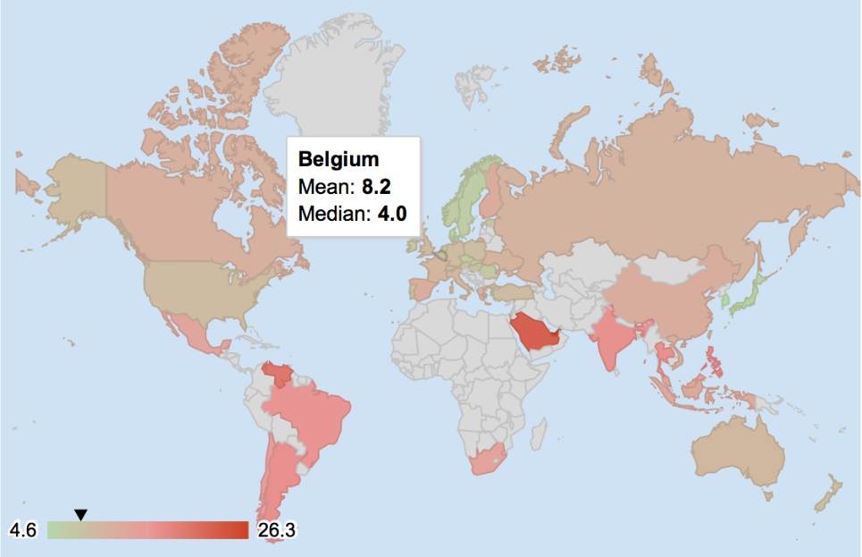As tracked by Google Analytics — April 2012
Profiling details: Chrome Dev Tools
Open Dev Tools, look at timeline
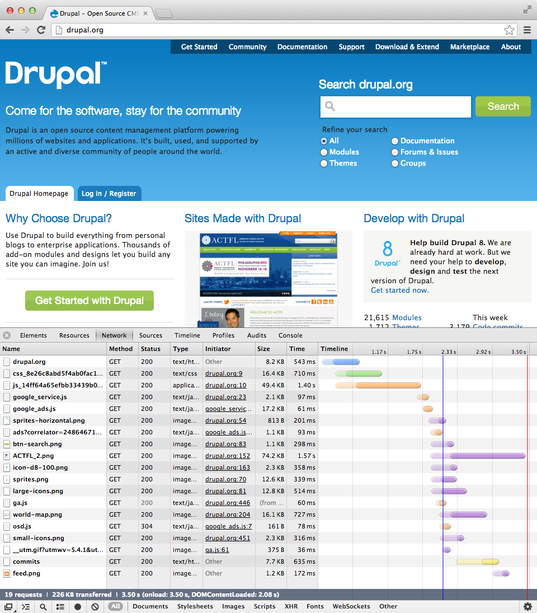Look at headers of a specific resource
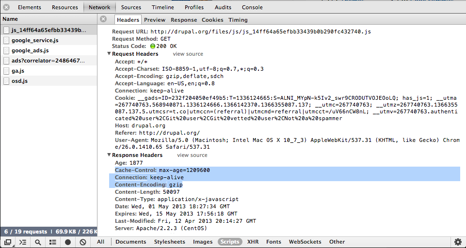Network Utilization & Web Page Performance audits
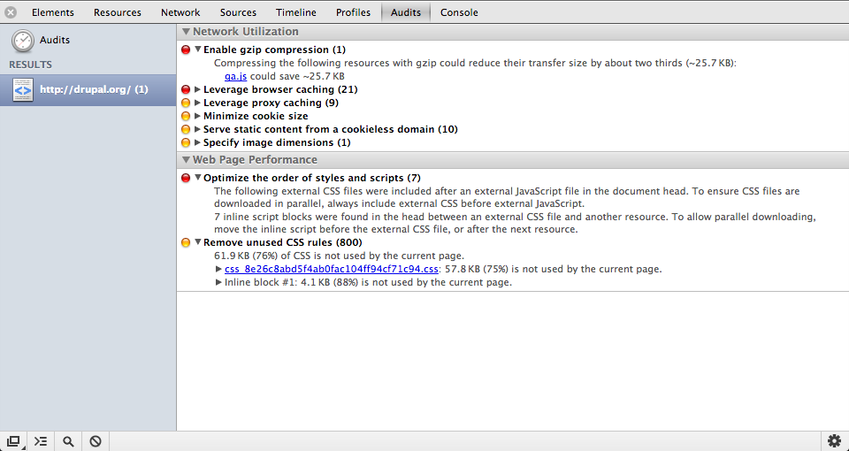CSS selector profiling (applied to these slides).
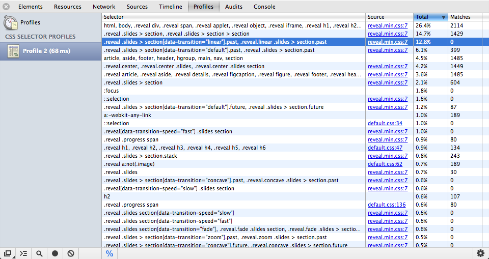Lots of settings.
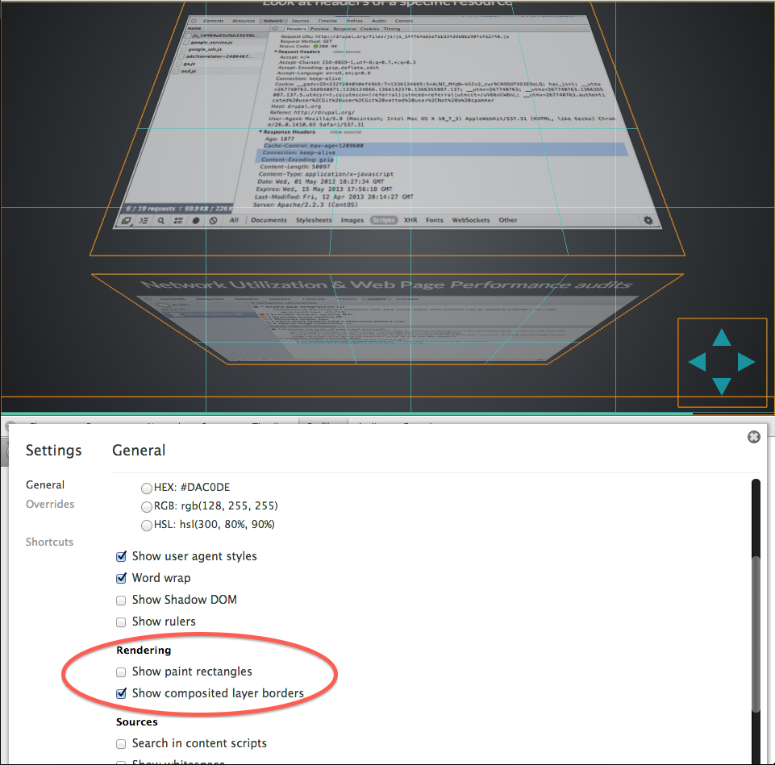Example: www.uhasselt.be
No optimization
Pretty fast: ±1 second in Belgium
… but only in Belgium.
Original
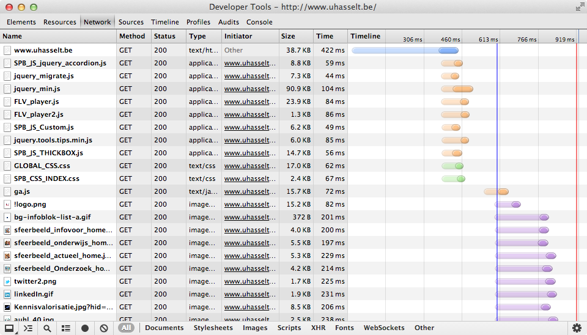53 requests, 618 KB, 613 ms DOMready, 919 ms onload
Original
mobitest.akamai.com
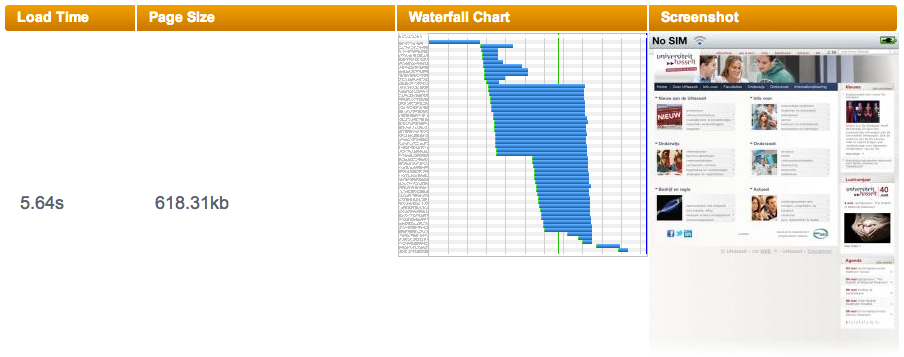iPhone 4, iOS 5, Cambridge MA, U.S.A.
Minor optimizations
Optimized images, aggregated JS, JS to bottom, expiration headers, gzipping, use CDN.
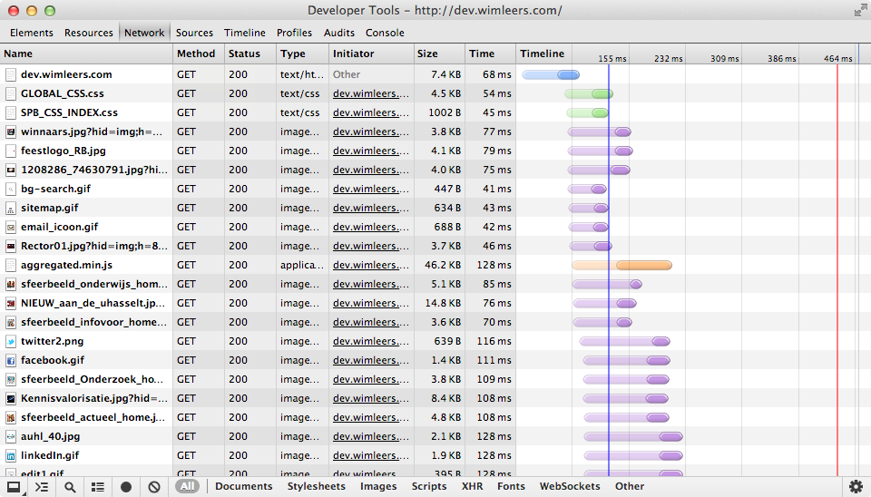45 requests, 376 KB, 155 ms DOMready, 464 ms onload
Optimized
mobitest.akamai.com
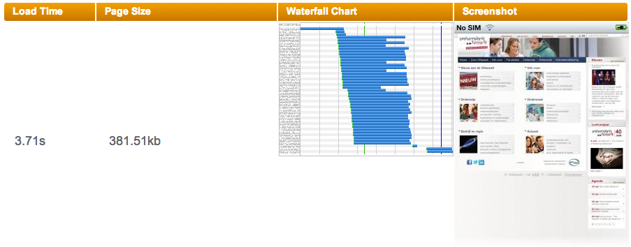iPhone 4, iOS 5, Cambridge MA, U.S.A.
ImageOptim
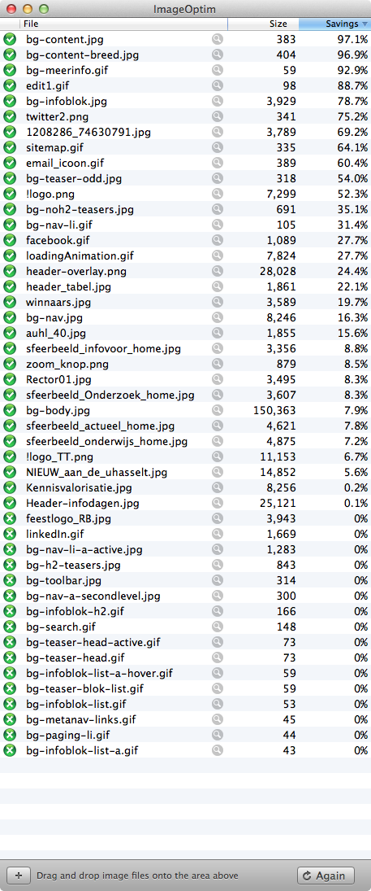Example: google.be
Extreme optimization
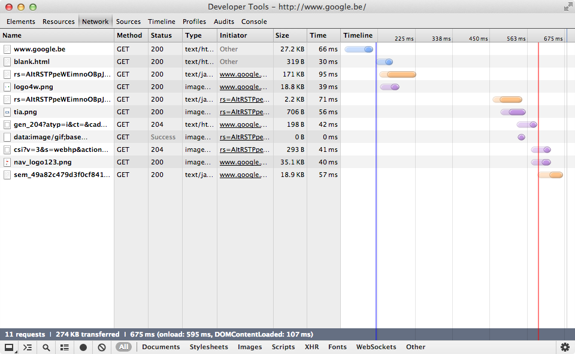11 requests, 274 KB, 107 ms DOMready, 595 ms onload
Analysis
- Zero CSS files — all CSS inlined!
- A single request and the page becomes interactive!
- Immediately thereafter:
google.be/blank.html— detect capturing proxies?google.be?rs=<hash>— 171 KB worth of logic in JS! (Split payload.)- Big logo.
- Then:
- Secondary images
- Personal metadata collection callback?
- Context (location etc.) callback?
Example: wimleers.com
Some optimization
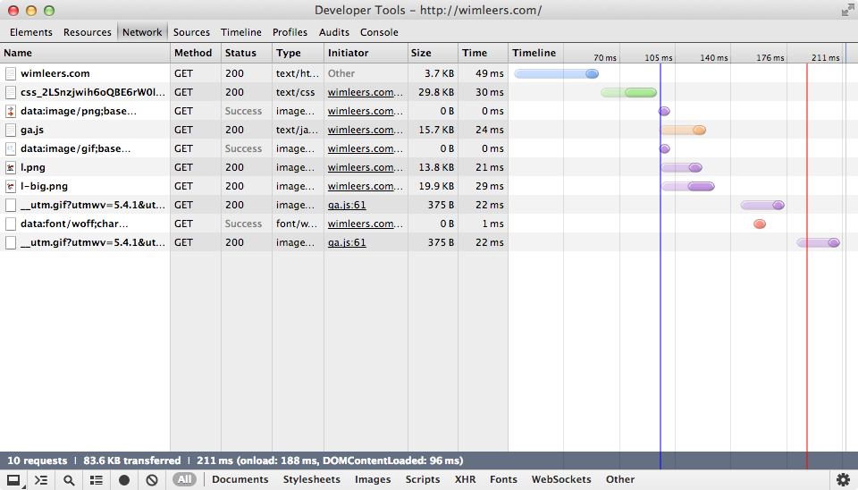10 requests, 83.6 KB, 96 ms DOMready, 188 ms onload
Analysis
- Zero JS besides Google Analytics
- Two requests and the page becomes interactive!
- Immediately thereafter:
- Three data URI resources inlined in CSS: images + font
- Google Analytics' JS
- Two images referenced by the HTML
Sources
- Design Fast Websites, Nicole Sullivan, Yahoo!
- 14 Rules for Faster-Loading Web Sites, Steve Souders
- Browser innovation and the 14 rules for faster loading websites: Revisiting Steve’s work (part 2), Tammy Everts
- Global Site Speed Overview: How Fast Are Websites Around The World?, Google Analytics team
- httparchive.org
- igvita.com
Recommended reading
- pinboard.in/u:wimleers/t:wpo+mustread
- Anything by Ilya Grigorik